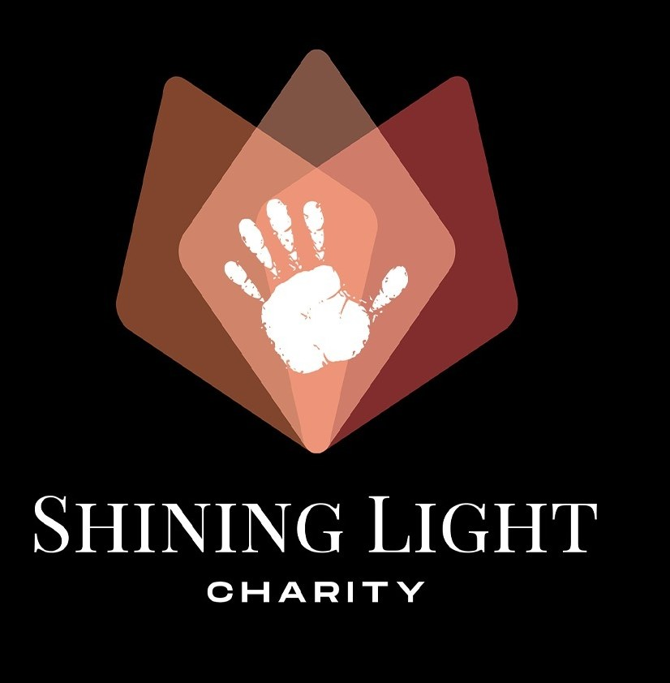
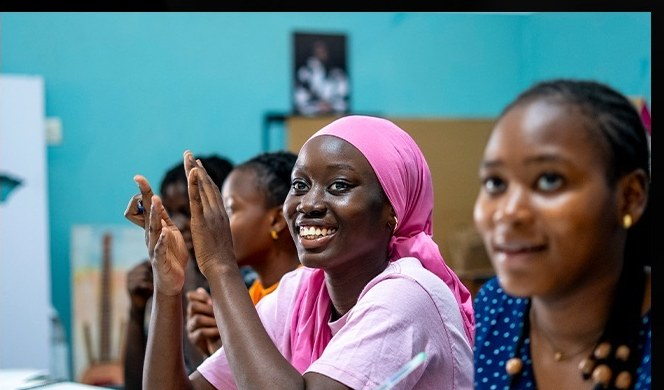
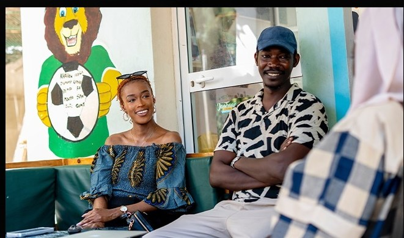
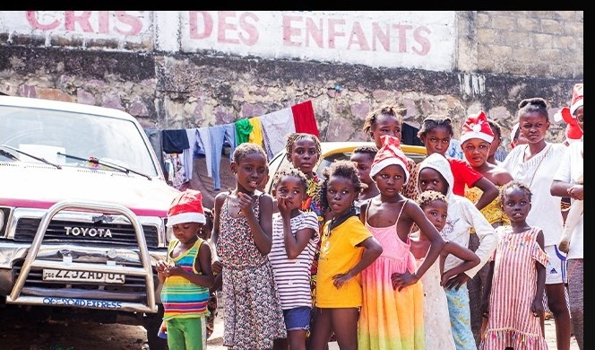
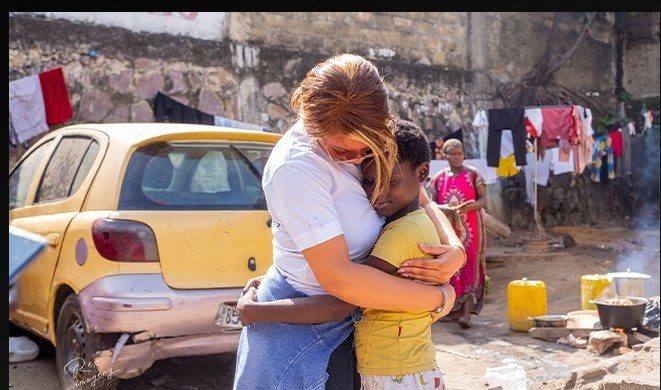
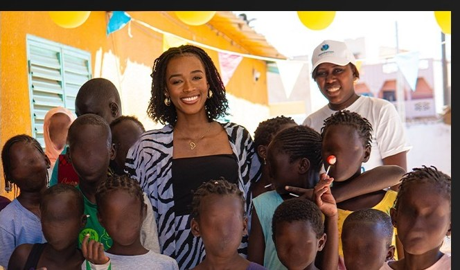
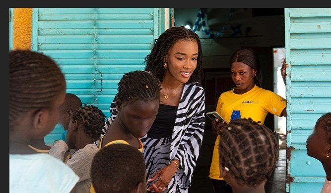

Impact, hope and human commitment
Born from a deep desire to give success meaning, Shining Light Charity is part of a drive for lasting social impact, where fashion becomes a lever for action and transformation. Far beyond aesthetics, it carries a mission: touching lives, restoring smiles and offering opportunities to those who need them most.
Through actions carried out between Dakar and Kinshasa, the organization is actively engaged in the fight against child vulnerability, providing concrete support to children facing difficult realities. Whether through psychological support, donations, or educational and artistic activities, every intervention is designed to awaken potential and nurture hope.
Driven by values of dignity, sharing and inclusion, Shining Light Charity builds bridges between passion and compassion, between personal success and collective responsibility. It inspires a conscious generation, able to dream big while staying anchored in what matters most: people.
— Claire Simada Aeschimann
- Fighting child abuse
- Psychological support and trauma awareness
- Donations and support for orphanages and nurseries
- Educational and artistic activities (fashion and art)
Our actions in the field
Smiles, bonds, opportunities

Dakar
Dakar
Kinshasa
Kinshasa
Mbour
In the fieldTalk Therapy
Testimonies and honest conversations about childhood trauma, resilience and healing.
Talk Therapy — “I was sexually abused at 6 years old”: speaking about trauma to heal.
Talk Therapy EP 10 — Growing up after losing your parents.
Talk Therapy EP 8 — Parental instability, fatphobia and rebuilding.
Help us light up lives.
Support an action, propose a partnership or join our initiatives in the field.
Support an initiative